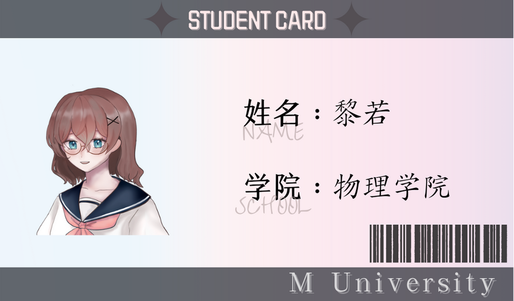
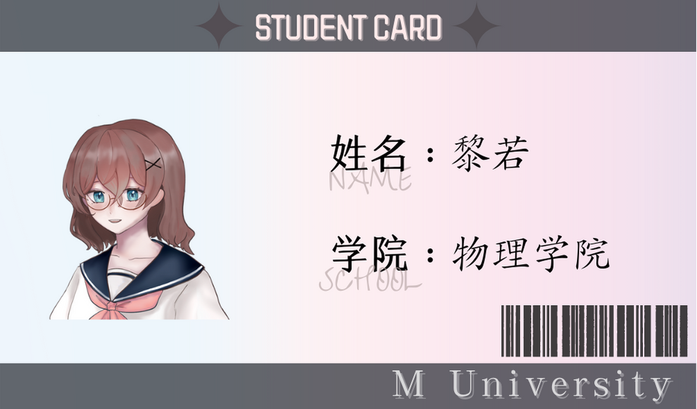
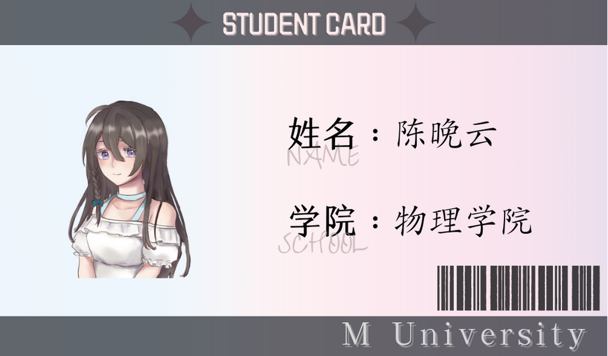

黎若
学生证：

看起来有些阴郁的女大生。
实际上很好相处。
没有什么特别的经历。
有着莫名其妙的女同磁场。
刚和前女友分手，分手原因不明。
学生证：

看起来有些阴郁的女大生。
实际上很好相处。
没有什么特别的经历。
有着莫名其妙的女同磁场。
刚和前女友分手，分手原因不明。
学生证：

一起合租的亚撒西学姐。
履历相当丰富，是学校的风云人物。
最擅长烹饪和插花。
在图书馆对黎若一见钟情。
走攻心路线。
学生证：（没有人见过）
长相甜美可爱的学妹。
很少被人拒绝。
粘人但神出鬼没。
黎若的狂热追求者。
走的是直球路线。
听说是体验生活的富婆。
表情很少，说话简洁。
对黎若的态度不是很寻常。
咖啡店角落里有一把坏掉的电吉他。
是甜党，喜欢吃马卡龙，咖啡加糖。
黎若前女友。两人曾经感情深厚，分手原因不明。
狐狸眼，看起来总是在笑
喜欢讲一些只有黎若捧场的冷笑话。
声音好听，睡前经常给黎若读书。
身子很弱，气色常年不佳。
“和前女友分手后，我再也走不出那个雨夜。”
（如果全文加载不出来请点击翻页键来回翻动几次。）
许棉凑近，说话的声音带点醉意：“若若……你真好看。”她看着我，那双眼睛像是一片沉静的海，我的影子沉在海底。
我被她专注的目光盯得害臊，拿走她手上的杯子：“你醉了。”
她不太理解地蹙眉，目光仍旧一瞬不瞬地落在我身上，瞳孔亮得惊人。
她拥有一双和顾时桐一模一样的眼睛。
“……若若。”
她叫我的名字，清脆的声线里掺着一丝低哑。叠词在她口中黏连成暧昧不清的形状，仿佛是一句能让什么事情发生的咒语。
她的脸越靠越近。我甚至看得清她脸上细小的绒毛。
湿红的唇贴了上来，软得人心尖发颤。
我的脑海乱糟糟的。明明没喝醉，却好像泡在酒精里一样浑身软弱无力。
耳边响起嘈杂的声音，听不太真切，一会儿是顾时桐的哭声，一会儿是许棉的喘息声。
她的舌头轻易地突破我的牙关，舔弄，纠缠，汲取，以一种强硬的姿态。
我不知所措，却自动迎合着入侵的动作，沉浸在她铺天盖地的气息里。她的味道是甜的，像是咬开果肉溅出的丰沛汁水。
这个柔软又绵长的吻，又因为酒精的缘故让人尝出一点苦涩。
她睁开眼睛和我对视。
我想要躲闪，却像被攫住一样无法移开视线。她拥有一双和顾时桐一模一样的眼睛。
这是我最应该拒绝她的原因，也是我最不能拒绝她的原因。
我们边缠绵地拥吻边凝视着彼此，好像灵魂变成了透明色。
我终于意识到我做了不可挽回的错事。